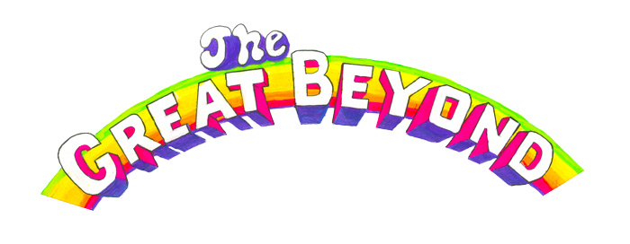

<main>
    <div class="container-fluid">
        <div class="row justify-content-center artist-container">
            <div class="col-xs-12 col-sm-8 embed-responsive embed-responsive-16by9">
                <iframe class="embed-responsive-item" src="https://www.youtube.com/embed/XOaOCwcc9S4" frameborder="0" allow="accelerometer; autoplay; encrypted-media; gyroscope; picture-in-picture" allowfullscreen></iframe>
            </div>
            <div class="w-100"></div>
            <div class="col-xs-10 col-sm-6 text-center artist-logo">
                
            </div>
            <div class="w-100"></div>
            <div class="col-xs-12 col-sm-8 bio">
                <p>The Great Beyond is a new project by multi-instrumentalist, painter, writer, and producer <a href="https://www.spencerokarma.com/">Spencer O’Karma</a>.</p>
                <!-- <p>Spencer O’Karma sent me a text in 2017 saying he moved to LA and wanted to meet up. We hadn’t spoken in 6 or 7 years — last I heard he was painting out in New Orleans.</p>
                <p>We grew up together in the SF Bay Area music scene playing house parties and punk shows at 924 Gilman St. and other local spots. He had a band called ParasitesGo! that everybody was hyped about. They played our tour kickoff when I was in a band called Shakey Bones opening for the Abi Yoyos on a national tour in 2006. We were several years apart so he must’ve been 16 or 17 at the time.</p>
                <p>Now he’s knocking on my door in Los Angeles in 2017 and hands me a burned CD when he walks in the door. We catch up and I get him a job through a friend working the graveyard shift at a university library. O’Karma spends the late nights in the library studying meditation and working on his first novel about a kid on the spectrum who’s obsessed with The Beatles. O’Karma describes himself as a vampire — he’s an actor too, he could definitely play the part.</p>
                <p>I must’ve listened to that CD over 100 times. It’s raw and surreal, reminded me of The Clash, The Replacements, Brian Eno, and Big Star, but weirder. We spent the next few months working out a track list and O’Karma recorded some new tunes with a bit more of an electronic Kate Bush vibe. We distilled it down to 13 songs from over 100 demos, and remixed everything to make it hit as hard as it could given that it was recorded into the aux jack of a beat up old MacBook running an ancient version of GarageBand. It’s raw and punk but there are pop hooks bleeding out everywhere.</p>
                <p>The result is Heaven Is A Room, O’Karma’s first full-length under the name The Great Beyond. The album is 100% written, recorded, and performed by Spencer O’Karma. He did a lot of the album art and made his own videos too. I love it so much I decided to start a record label, Magic Nothing, and this is the first release. Dig it.</p>

                <p>- Zack, November 2019</p> -->
            </div>
        </div>
    </div>
</main>
